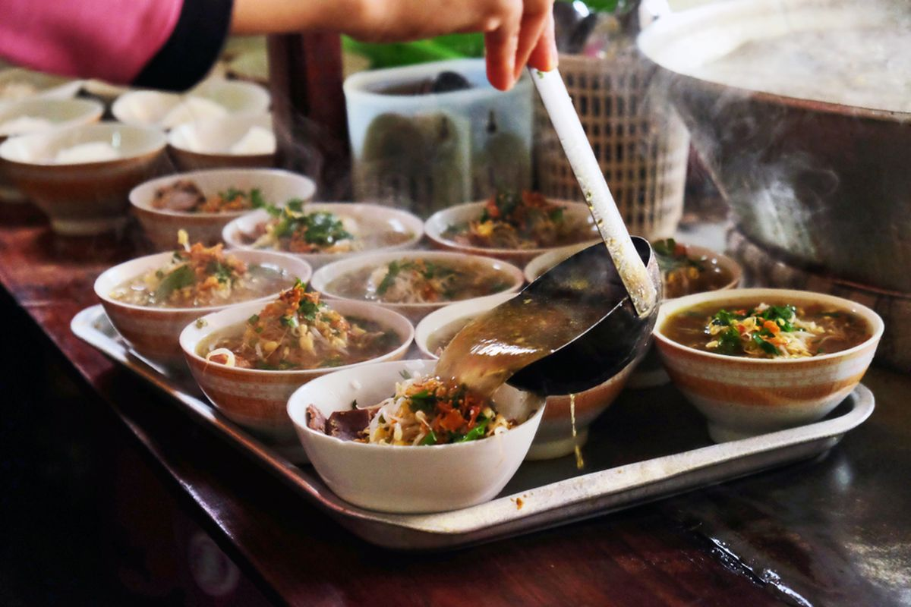

Soto Ayam Premium
Kuah gurih dengan ayam pilihan.
Rp18.000Menyajikan cita rasa autentik Indonesia dengan kualitas restoran modern.
Pelanggan
Varian Menu
Rating
Kuah gurih dengan ayam pilihan.
Rp18.000
Daging sapi dan kuah santan premium.
Rp22.000
Daging empuk dengan rempah pilihan.
Rp25.000
Soto Nusantara lahir dari sebuah keyakinan sederhana: cita rasa terbaik selalu berasal dari kualitas terbaik. Dengan memadukan resep autentik Indonesia, rempah pilihan, dan standar pelayanan modern, kami menghadirkan pengalaman kuliner yang lebih dari sekadar menikmati semangkuk soto. Setiap hidangan disiapkan dengan dedikasi tinggi untuk menjaga konsistensi rasa, aroma, dan kualitas yang menjadi identitas kami. Kami percaya bahwa kepercayaan pelanggan dibangun melalui detail-detail kecil, mulai dari pemilihan bahan baku hingga pelayanan yang hangat dan profesional. Bagi kami, Soto Nusantara bukan hanya sebuah usaha kuliner, melainkan wujud komitmen untuk melestarikan kekayaan cita rasa Indonesia dalam kemasan yang modern, elegan, dan berkelas.
Soto terenak yang pernah saya coba.
Pelayanan cepat dan tempat nyaman.
Harga murah kualitas premium.
📞 0812-3456-7890
📧 sotonusantara@gmail.com
📍 Purwakarta, Jawa Barat